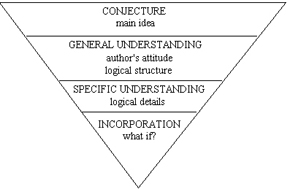

THE THREE STEP METHOD
1. (Optional) Preview the first sentence of each paragraph.
2. Read the passage at a faster than usual pace (but not to the point that comprehension suffers). Stay alert to places from which any of the six questions might be drawn:
a.) Main Idea
b.) Description
c.) Writing Technique
d.) Extension
e.) Application
f.) Tone
3. Annotate the passage and note any pivotal words. Then use them as reference points when answering the questions. Following are some common annotation marks (you may want to add to this list):
A = Author’s Attitude
C = Complex point
? = Question? I don’t understand this part (you can bet that this area will be important to at least one question)
SP = Significant point
! = Exclamation! Strong opinion
W = Weak, questionable or unsupported argument or premise
Notice how the three-step process proceeds from the general to the specific. The first step, previewing the first sentences, gives you an overview of the passage. This will help you answer main idea questions. The second step, reading the passage at a slightly faster than usual pace, brings out the passage’s structure (i.e., does the author compare and contrast, show cause and effect, etc.). Further, it will clue you into the author’s attitude (positive, negative, objective, indifferent, etc.). Finally, the third step, noting pivotal words and annotating, will solidify your understanding of the passage and highlight specific details.
The three step method should be viewed as a dynamic, and not a static, process. The steps often overlap and they are not performed in strict order. Comprehending a passage is an ebb and flow process. Analyzing a passage to understand how it is constructed can be compared to dismantling an engine to understand how it was built—you may stop occasionally and reassemble parts of it to review what you just did; then proceed again to dismantle more. Likewise, when reading a passage, you may first read and annotate a paragraph (disassembling it) and then go back and skim to reassemble it. During this process, comprehension proceeds from the global to the specific. This can be represented by an inverted pyramid:

In the conjecture stage, we form a tentative main idea—one which we may have to modify or even reject as we read more deeply into the passage. In the general understanding stage, we develop a feel for the author’s tone and discover the schema that she uses to present her ideas. In the specific understanding stage, we fill in the minor gaps in our understanding. Finally, in the incorporation stage, we integrate the ideas presented in the passage into our own thought process. We now understand the ideas sufficiently to defend them, apply them to other situations, or evaluate their validity in a hypothetical situation. Only with complete understanding of the passage can this be done.
Let’s apply the three step method to the passage on the next page. Begin by previewing the first sentence of each paragraph:
The sentence "That placebos can cure everything from dandruff to leprosy is well known" implies that the passage is about placebos and that they are perhaps cure-alls.
The sentence "Every drug tested would prove effective if special steps were not taken to neutralize the placebo effect" gives the first bit of evidence supporting the topic sentence.
The sentence "Most people feel that the lucky patients in a drug test get the experimental drug because the real drug provides them a chance to be cured" might be introducing a counter-premise or pivotal point; we won’t know until we read the passage.
The sentence "Placebos regularly cure more than five percent of the patients and would cure considerably more if the doubts associated with the tests were eliminated" provides more support for the topic sentence.
The sentence "The actual curing power of placebos probably stems from the faith of the patient in the treatment" explains why the topic sentence is true.
The sentence "It may take a while to reach the ten percent level of cure because any newly established program will not have cultivated the word-of-mouth advertising needed to insure its success" is hard to interpret. This does not help us.
The sentence "Unfortunately, placebo treatment centers cannot operate as nonprofit businesses" seems to be off the subject. Again, this does not help us.
In summary, although the last two sentences were not useful, we now have a good idea of what the passage is about: how and why placebos are effective. We now read the passage—looking for places from which any of the six questions might be drawn, noting the pivotal words, and annotating key points.
Passage begins on the next page. c
That placebos can cure everything from dandruff to leprosy is well known. They have a long history of use by witch doctors, faith healers, and even modern physicians, all of whom refuse to admit their efficacy. Modern distribution techniques can bring this most potent of medicines to the aid of everyone, not just those lucky enough to receive placebos in a medical testing program.
Every drug tested would prove effective if special steps were not taken to neutralize the placebo effect. This is why drug tests give half the patients the new medication and half a harmless substitute. These tests prove the value of placebos because approximately five percent of the patients taking them are cured even though the placebos are made from substances that have been carefully selected to be useless.
Most people feel that the lucky patients in a drug test get the experimental drug because the real drug provides them a chance to be cured. (1) Yet analysis shows that patients getting the placebo may be the lucky ones because they may be cured without risking any adverse effects the new drug may have. Furthermore, the drug may well be found worthless and to have severe side effects. No harmful side effects result from placebos.
Placebos regularly cure more than five percent of the patients and would cure considerably more if the doubts associated with the tests were eliminated. Cures are principally due to the patient’s faith, (2) yet the patient must have doubts knowing that he may or may not be given the new drug, which itself may or may not prove to be an effective drug. Since he knows the probability of being given the true drug is about fifty percent, the placebo cure rate would be more than doubled by removing these doubts if cures are directly related to faith.
The actual curing power of placebos probably stems from the faith of the patient in the treatment. This suggests that cure rates in the ten percent range could be expected if patients are given placebos under the guise of a proven cure, even when patients know their problems are incurable.
It may take a while to reach the ten percent level of cure because any newly established program will not have cultivated the word-of-mouth advertising needed to insure its success. One person saying "I was told that my problem was beyond medical help, but they cured me," can direct countless people to the treatment with the required degree of faith. Furthermore, when only terminal illnesses are treated, those not cured tell no one of the failure.
Unfortunately, placebo treatment centers cannot operate as nonprofit businesses. The nonprofit idea was ruled out upon learning that the first rule of public medicine is never to give free medicine. Public health services know that medicine not paid for by patients is often not taken or not effective because the recipient feels the medicine is worth just what it cost him. (3) Even though the patients would not know they were taking sugar pills, the placebos cost so little that the patients would have no faith in the treatment. Therefore, though it is against higher principles, treatment centers must charge high fees for placebo treatments. This sacrifice of principles, however, is a small price to pay for the greater good of the patients.
The first item is a main idea question:
1. Which one of the following best expresses the main idea of the passage?
The other choices can be quickly dismissed. (B) is the second-best choice: the author does mention that modern distribution techniques can bring the curative power of placebos to everyone, but he does not fully develop that idea. This answer-choice is tempting because it is contained in the topic paragraph. As to (C), it overstates the author’s claim. Although in the third paragraph, the author states that those who receive the placebos may be the lucky ones, this is referring to new, unproven drugs, not to established drugs. As to (D), it, like (B), is mentioned in the passage but is not fully developed. It’s tempting because it appears in the last paragraph—a natural place for the conclusion. Finally, (E) is neither mentioned nor implied by the passage.
The second item is an application question.
2. Which one of the following is most analogous to the idea presented in the last paragraph?
The third item is a description question.
3. According to the passage, when testing a new drug medical researchers give half of the subjects the test drug and half a placebo because
Choice (D) illustrates why you must refer directly to the passage to answer a description question: unless you have a remarkable memory, you will be unsure whether the statement was that all or that most drugs would prove effective.
The fourth item is an extension question.
4. It can be inferred from the passage that the author might
The fifth item is a writing technique question.
5. Which one of the following best describes the organization of the material presented in the passage?
The sixth item is a tone question.
6. Which one of the following most accurately characterizes the author’s attitude toward placebo treatment?
The other choices can be quickly eliminated:
"Summary dismissal" is not supported by the passage. Besides, a scholar would never summarily dismiss something; he would consider it carefully—or at least give the impression that he has—before rejecting it. This eliminates (C).
Given the human ego, we are unlikely to admit that we don’t understand the subject we are writing about. This eliminates (D).
"Zealous promotion" is too strong; "promotion" itself is probably too strong. This eliminates (E).